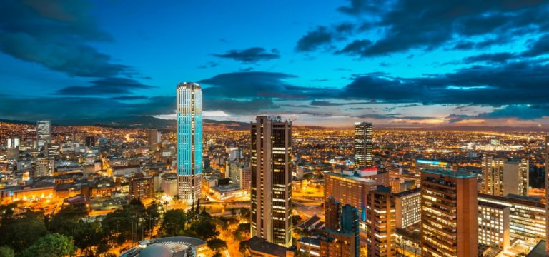

Varifrån kommer jag?
Jag är född i Colombia men jag bodde hälften av mitt liv i Spanien.
Jag har bott i Sverige i två år!!
Under hela mitt liv har jag kunnat bo i 4 länder:



Jag är född i Colombia men jag bodde hälften av mitt liv i Spanien.
Jag har bott i Sverige i två år!!
Under hela mitt liv har jag kunnat bo i 4 länder:
Jag gillar verkligen att lära mig om andra kulturer! Det är väldigt intressant och roligt!!
Från Japan kultur gillar No-teater, Kimonos och Hokusai.

Jag är intresserad av kursen eftersom jag ser att i framtiden måste många saker digitaliseras och det finns områden som utbildning för barn som saknar intressanta och mer interaktiva förslag för innehållshantering. I framtiden skulle jag vilja kunna arbeta inom det området!